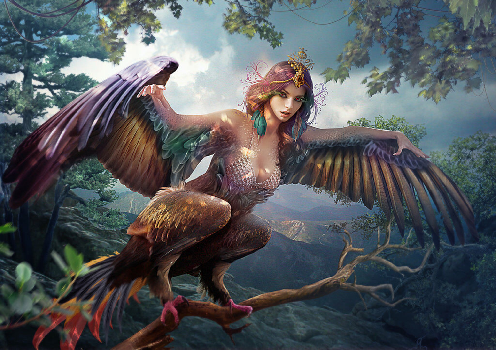
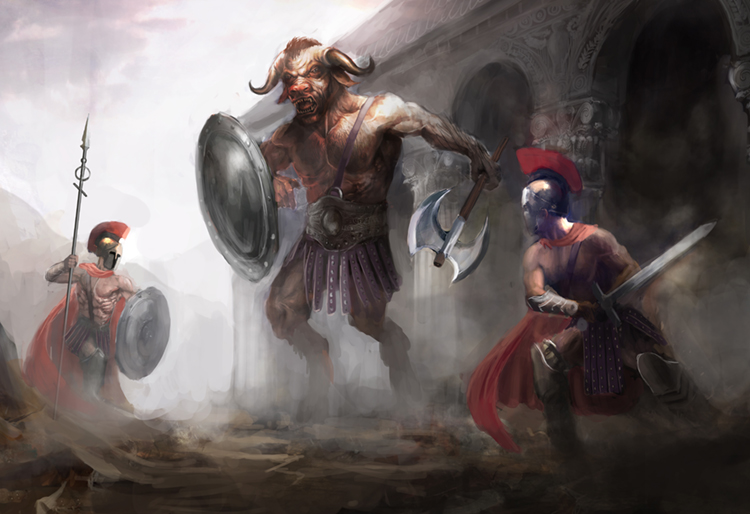

The World of Mythology
Gorgons
| Greek | Norse | Egyptian | Japanese |
|---|---|---|---|
| Gorgon | Nidhogg | The Sphinx | Kitsune |
| Cerberus | Jörmungandr | Serpopard | Bakeneko |
| Harpie | Gullinbursti | Ammit | Gashadokuro |
| Chimera | Fenrir | Apophis | Kappa |
| Minotaur | Kelpie | Bennu | Nure-onna |

In Greek mythology, the Gorgons are monstrous female creatures known for their hair made of living snakes and their terrifying gaze, which could turn anyone who looked directly at them into stone. The most famous of the Gorgons is Medusa, often portrayed as the only mortal among her sisters, Stheno and Euryale, who were immortal. The Gorgons are said to have been daughters of the sea deities Phorcys and Ceto. In various myths, they represent a symbol of both danger and transformation. Medusa's story, in particular, is one of tragedy; she was once a beautiful maiden who was punished and transformed into a Gorgon by Athena after being violated by Poseidon in one of Athena's temples. This punishment reflects themes of beauty, vengeance, and the often harsh consequences of divine actions in Greek mythology. The Gorgons have been depicted in various works of art and literature, serving as a powerful emblem of protection and fear. Their image was famously used on shields and armor to ward off evil. The myth of Perseus, who ultimately slays Medusa and uses her head as a weapon, further emphasizes the struggle between heroism and monstrosity, showcasing the complexities of these iconic figures in ancient stories.
Harpie
In Greek mythology, Harpies are winged spirits often depicted as having the bodies of birds and the faces of women. They are typically seen as embodiments of storm winds and are associated with stealing and snatching things away. The name "Harpie" comes from the Greek word "harpe," meaning "to snatch." Harpies are often portrayed as malevolent creatures who torment humans and are known for their thieving behavior. One of the most famous stories involving Harpies is in the myth of King Phineas, who was punished by the gods for revealing too much about the future. The Harpies would steal his food and leave behind nothing but filth, tormenting him relentlessly. Eventually, the heroes Jason and the Argonauts, with the help of the Boreads (the sons of the North Wind), rescue Phineas by driving the Harpies away. While they are commonly depicted as vile and malicious, in some interpretations, Harpies can also represent the destructive forces of nature, signifying the uncontrollable aspects of the world. Their dual nature as both tormentors and elements of nature makes them complex figures in Greek mythology, embodying themes of fate, retribution, and the unpredictable forces that shape human destiny.
Minotaur
The Minotaur is a legendary creature from Greek mythology, known for having the body of a man and the head of a bull. Born from the union of Pasiphaë, the wife of King Minos of Crete, and a magnificent bull sent by Poseidon, the Minotaur symbolizes the intertwining of human and animal, civilization and chaos. According to the myth, King Minos, embarrassed by the creature’s existence, ordered the construction of a vast labyrinth designed by the craftsman Daedalus to contain the Minotaur. This labyrinth was so complex that no one could escape once they entered. The Minotaur was fed a diet of human sacrifices, which contributed to its fearsome reputation. The story of Theseus and the Minotaur is one of the most famous tales involving this creature. Theseus, a hero from Athens, volunteered to be one of the tributes sent to Crete to be sacrificed to the Minotaur. With the help of Ariadne, Minos's daughter, who provided him with a ball of thread to navigate the labyrinth, Theseus managed to find and slay the Minotaur. Afterward, he followed the thread back to safety, symbolizing the triumph of human ingenuity and courage over chaos and beastliness. The Minotaur myth carries rich themes, including the struggle between civilization and barbarism, the consequences of human desires, and the quest for identity and heroism within challenging circumstances. It continues to be a powerful symbol in literature and art, representing the darker aspects of human nature and the journey into the unknown.
Cerberus

Cerberus is a prominent figure in Greek mythology, known as the three-headed dog that guards the gates of the Underworld. The offspring of the monsters Echidna and Typhon, Cerberus is often depicted as a fierce and formidable creature with a serpentine tail and, in some versions, other additional heads, such as those of snakes. His primary role is to prevent the dead from escaping the Underworld and to ensure that the living do not enter without permission. Cerberus embodies the themes of boundary and transition between life and death, serving as a protector of the realm of Hades. One of the most famous myths involving Cerberus is the twelfth labor of Heracles (Hercules), in which he was tasked with capturing the beast. With the help of his wit and strength, Heracles was able to subdue Cerberus and bring him to the surface, proving his bravery and fulfilling his labor. This encounter illustrates not only a confrontation with death but also the importance of courage and the acceptance of one's mortality. Cerberus is often portrayed in art and literature as both a terrifying and tragic figure, combining elements of loyalty to his role as guardian and the monstrous nature of his existence. He remains a powerful symbol of the complexities surrounding life, death, and the unknown in ancient mythology.